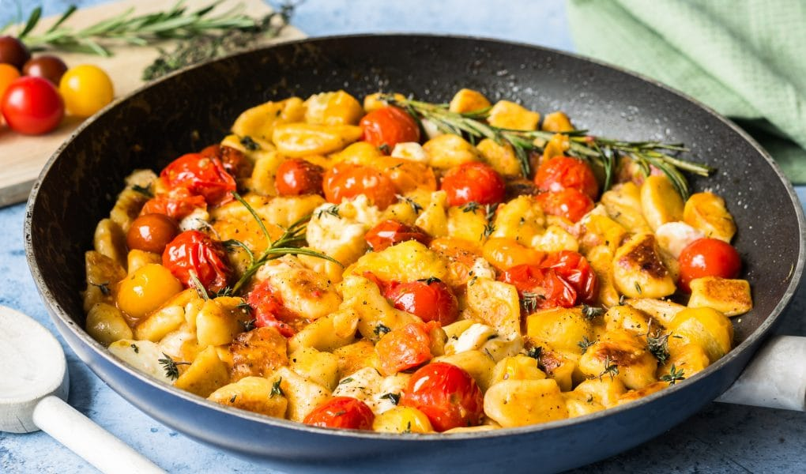

Chorizo & Mozzarella Gnocchi Bake

Figure 1. Gnocchi Dish
Description
Ingredients
- 1 tbsp olive oil
- 1 onion, finely chopped
- 2 garlic cloves, crushed
- 120g chorizo, diced
- 2 x 400g cans chopped tomatoes
- 1 tsp caster sugar
- 600g fresh gnocchi
- 125g mozzarella
- Small bunch of basil, torn
- Green salad, to serve
Preparation
- Heat the oil in a medium pan over a medium heat.
- Fry the onion and garlic for 8-10 mins until soft.
- Add the chorizo and fry for 5 mins more.
- Tip in the tomatoes and sugar, and season.
- Bring to a simmer. Then, add the gnocchi and cook for 8 mins. Stirring often, until soft.
- Heat the grill to high.
- Stir 3/4 of the mozzzarella and most of the basil through the gnocchi.
- Divide the mixture between six ovenproof ramekins, or put in one baking dish.
- Top with the remaining mozzarella, then grill for 3 mins, or until the cheese is melted and golden.
- Season, scatter over the remaining basil and serve with green salad.